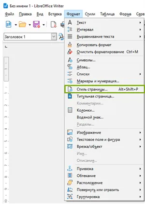
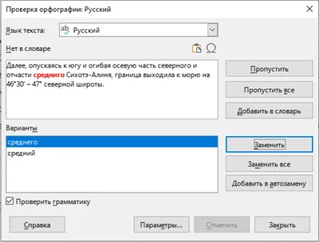
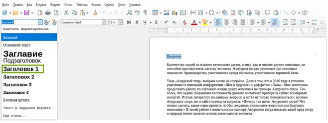
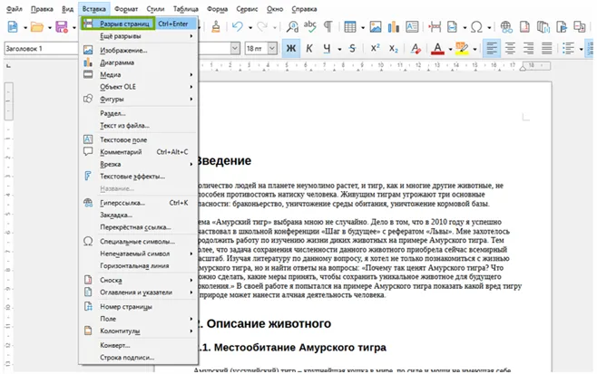
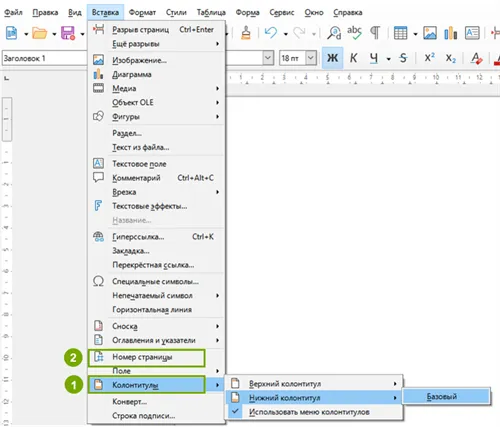
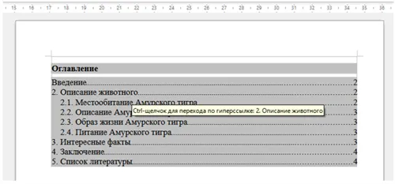
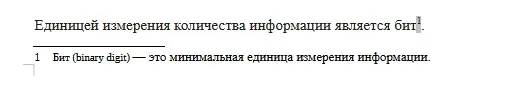
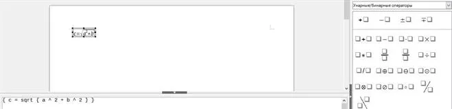

Текстовый процессор.
Создание авто оглавления. Создание стилей документа. Работа с рисунками, формулами, колонтитулами.
Текстовый процессор — это программа, предназначенная для создания, редактирования, форматирования и печати текстовых документов на компьютере.
Текстовые процессоры имеют огромную ценность для написания различных рефератов, докладов и т. д. Они предоставляют широкие возможности для оформления текста, создания таблиц, вставки изображений и других элементов.
Основными возможностями текстовых процессоров являются следующие:
- Создание и редактирование текстовых документов.
- Форматирование текста (шрифт, размер, стиль, выравнивание, отступы и многое другое).
- Вставка и форматирование изображений, таблиц и графиков.
- Создание списков.
- Проверка правописания и грамматики.
- Работа с различными файловыми форматами (.doc, .docx, .pdf, .odt и др.).
- Оформление содержания, заголовков, сносок и библиографии.
- Печать документов.
Одним из самых распространённых текстовых процессоров, который позволяет создавать, редактировать и форматировать документы, является LibreOffice Writer.
Текстовые документы в программе LibreOffice Writer по умолчанию сохраняются в формате ODF (Open Document Format). Но также файл можно сохранить и в других форматах.
Структура документа при работе в текстовом процессоре может включать в себя следующие элементы:
- Титульный лист,где содержится вся информация об авторе, названии темы.
- Оглавление — это список разделов, подразделов и страниц, которые помогают читателю найти нужную информацию в документе.
- Введение, где определяется цель документа и обзор его содержания.
- Основной текстразделённый на главы, разделы и подразделы.
- Иллюстрации и таблицы — это графические элементы, которые могут визуально дополнять основной текст.
- Список литературы (если требуется) — это ссылки на источники и литературные материалы, использованные при создании документа.
- Приложения (по необходимости) — это дополнительные материалы, которые могут быть полезны для более подробного понимания основной информации в документе.
Это общая структура документа, которая может быть изменена в зависимости от типа документа и конкретных требований.
Оформим структуру документа на примере создания реферата в текстовом процессоре LibreOffice Writer.
Форматирование текста, настройка полей страниц документа
Нужно отформатировать текст, чтобы его было легче воспринимать. Необходимо открыть вкладку Формат в панели управления выбери пункт Абзац. 1. В разделе Отступы и интервалы настроить отступ первой строки — 1,25 см. Межстрочный интервал — 1,5 строки.

2. Выбрать размер шрифта 14 пунктов, тип шрифта — Times New Roman.
3. Следующий шаг — настройка поля страниц документа. Нужно перейти во вкладку Формат в панели инструментов и выбрать пункт Стиль страницы.
Далее появится окно с параметрами, где нам нужно будет указать характеристики поля слева — 3 см, справа — 1,50 см, сверху 2,50 и снизу — по 2 см.
В разделе Сервис есть функция Проверка орфографии, где можно посмотреть различные ошибки при написании текста и варианты их исправления.
Создание оглавления, номеров страниц
Для того чтобы создать оглавление, нужно к каждому заголовку применить свой стиль.
В LibreOffice Writer предусмотрено 9 стилей, они отличаются друг от друга размером шрифта и другими параметрами.
«Заголовок 1» используют для обозначения раздела глав или частей. Данный заголовок имеет характеристику 18 пунктов и выделен жирным.
«Заголовок 2»используется для обозначения параграфов или разделов внутри глав. Имеет характеристику 16 пунктов, выделен жирным.
«Заголовок 3»используется для обозначения подпараграфов, шрифт размером 13 пунктов, также выделен жирным.
Заголовки 4–9 актуальны для многоуровневых документов, поэтому они применяются редко.
Для того чтобы создать оглавление, нужны следующие шаги. 1. Выделить заголовки и применить к ним необходимый стиль.
2. После того как выделены все необходимые заголовки, нужно поставить курсор в начало документа и выполнить разрыв страницы для вставки оглавления.
3. Появилась пустая страница. Теперь необходимо пронумеровать страницы документа, чтобы отобразить оглавление.
Чтобы пронумеровать страницы, нужно вставить Колонтитулы → вставить Номер страницы.
Колонтитулы — это область, которая находится в верхней или нижней части каждой страницы и содержит информацию, повторяющуюся на каждой странице. Расположение номеров страниц можно изменять в Панели управления или в Боковой панели.
4. На пустой первой странице нужно вставить оглавление с помощью раздела Вставка → Оглавления и указатели → Оглавление, указатель или библиография. Если всё выполнено верно, то на первой странице должно появиться оглавление. Оглавление также является гиперссылкой в документе: с помощью неё можно перемещаться по документу к нужному разделу, не тратя время на пролистывание большого объёма страниц.
Сноски и гиперссылки
Сноска в текстовом документе — это дополнительный комментарий или пояснение, помещённое внизу страницы или в конце документа и обычно обозначенное номером или другим специальным символом в тексте.
Сноски используются для уточнения информации, привлечения внимания к дополнительным деталям, цитирования источников и т. д.
Гиперссылка в текстовом документе — это активный элемент, позволяющий пользователю перейти по нажатию на него к другому документу, веб-странице или ресурсу.

Гиперссылки могут использоваться для обеспечения удобства навигации, предоставления дополнительной информации или указания источников. Они часто выделяются цветом или подчёркиваются для облегчения их обнаружения пользователем. Сноски и гиперссылки можно применить в текстовом документе с помощью раздела Вставка.
Оформление списка литературы
Правила оформления списка литературы.
1. Список литературы должен быть упорядочен в алфавитном порядке по фамилии авторов или по заглавию, если авторы не указаны.
2. Источники должны быть оформлены в соответствии с определёнными правилами: указывается автор или авторы (сначала фамилия, потом инициалы), название работы, место издания, издательство, год издания, объём страниц.
3. Интернет-ресурсы оформляются в следующем порядке: фамилия, инициалы авторов, название документов или веб-страницы, тип ресурса (электронный), дата создания, URL-адрес и дата доступа.
Создание математических формул в текстовом редакторе
Для того чтобы создать математическую формулу, необходимо выбрать в панели инструментов Вставка → Объект → Формула.
Справа отобразилась панель конструктора формул, а снизу — поле для ввода кода формулы. Формулы LibreOffice Writer составляется с помощью кода, а конструктор их формирует.
Код c = sqrt{a^2 + b^2} преобразовался в формулу, где с помощью знака «^» переменные «a» и «b» возведены в квадрат.
С помощью конструктора формул, который находится справа, удобно составлять различные математические выражения, подставив нужное значение.